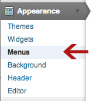
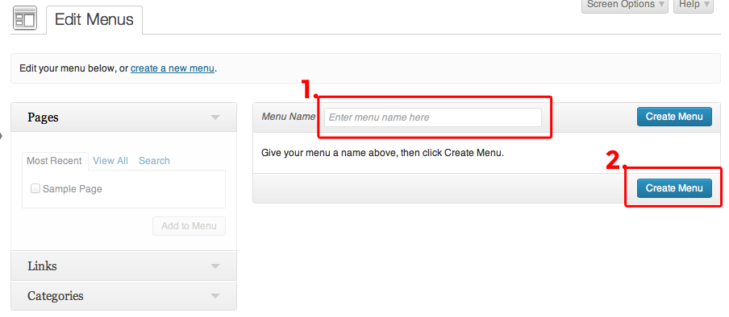
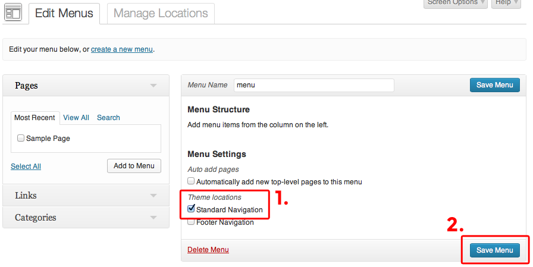
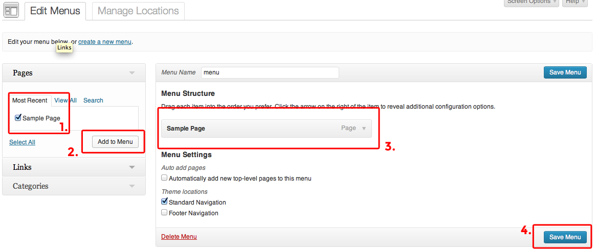

Slowave Support
Creating Menus
Open the Menu Section
The first step of creating our menu is to open the WP Menu Editor.
Create a Navigation Menu
To start, create a Menu Navigation. You just need to enter a "Menu Name" and click "Create Menu"..
Select A Menu Under Theme Locations
Once you've created the menu, the your next step is to select the Menu as the "Main Navigation" under the "Theme Locations". After you've selected your navigation from the drop-down, click "Save". This is what links your newly created menu to the theme.
Add Menu Link
The final step is adding pages and links to your newly created Menu. You can just select a page via the check-box and click "Add to Menu".
Then the page will be added in the Menu list on the right. You can drag menu items around to order them. Or customize/delete the menu items by clicking on the down arrow on the right. Once you are done customizing your menu, click "Save Menu".
